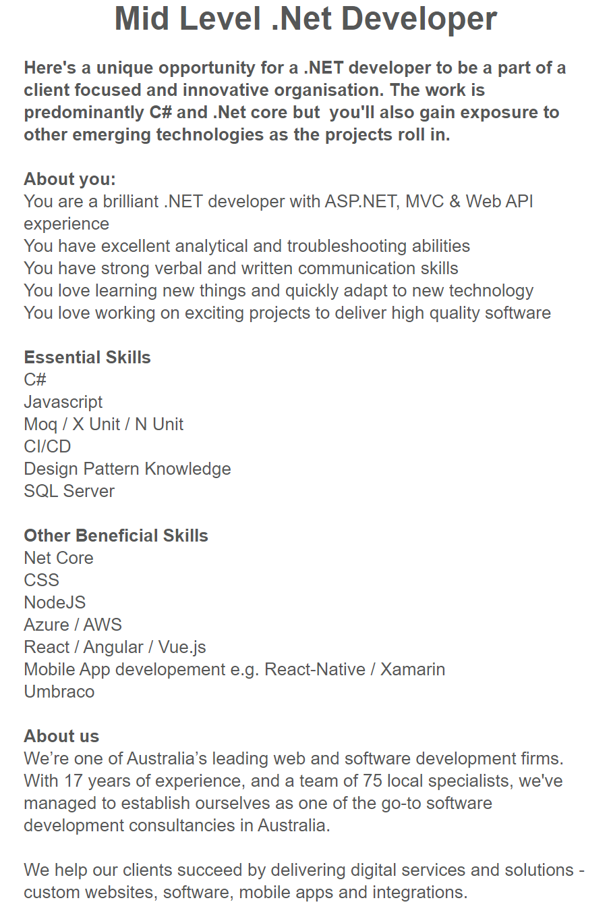

My Ideal IT Job
It was pretty tricky to find an ideal job. Obviously, a lot of talent acquisition within the informational technology field is done through recruitment agencies. A really important part of looking at potential jobs for me is not only the position description itself but also the sort of organisation itself. With the heavy reliance on the recruitment industry within IT, it's a little more tricky to get an idea of who you're looking at working for.
Regardless, I've done my best to find a good listing that combined my interests and existing skills with those I'm looking to further invest in.
This job listing for a mid level .NET Developer appears heavily based around developing dynamic web content using Microsoft's ASP.NET Core technology. The addition of Umbraco, an open source CMS engine built using ASP.NET, and Xamarin in the job listing as a beneficial skill is interesting, and points toward quite a diverse service offering from the company. I find this job appealing as it's centred around C# which is a language I'm very interested in, and heavily involved around ASP.NET Core MVC, which I enjoy working with.
The essential skills of the role are heavily based around backend .NET development and devops principles, with heavy C# knowledge underpinning a fair portion of the other beneficial skills as well. Javascript comes in second on the list, and I'd speculate it's listed as prominently as it is not only for its importance within the frontend sphere, but more specifically around AJAX to tie back into the ASP.Net Core back end. Some sort of an RDMS is a must for any sort of data-driven application, and the hiring company's preferred flavour is SQL Server. The remainder of the essential skills are focussed on the dev ops side of things, including unit testing and integration.
In terms of my own skills, I have a decent handle on the coding side of things, with at least a foundational understanding of C#, JS, SQL and CSS, which I've picked up mostly from my own self-directed learning from a multitude of different sources, including Microsoft Virtual Academy, LinkedIn Premium/Lynda and some other tutorial-style websites. My main focus in terms of these would be further building on these skills and developing further skills.
In terms of my plan going forward, I'm left in an interesting situation as RMIT and the other institutions offering courses under the OUA banner don't appear to offer any specific .Net or ASP related-learning(there is course CPT373 which appears highly relevant, however it doesn't appear to be offered currently according to the OUA website), so much of my continued development towards this type of job would need to be self-directed. Luckily by virtue of being a language developed by Microsoft, there is a wealth of knowledge available around C#, .NET and ASP.NET.
Regardless of the above, there's still plenty of relevant courses offered by RMIT that offer transferrable skills that would be incredibly handy to the sort of role above. I've identified the following as key courses:
- CPT222 - Software Architecture: Design and Implementation: this particular course appears to offer specific focus on MVC patterns using Java, testing and design patterns generally.
- CPT230 - Software Engineering Fundamentals: this course appears to lean heavily toward devops and general development skills. While UML isn't specifically mentioned in the job advertisement, working on any complex web application requires a team to be able to speak in the same language when planning and conceptualising, and UML is a great way to do this. The course also covers off Design Patterns and Testing again, similar to CPT222.
- CPT330 - Software Engineering Project Management: this course dives deeper into the business of software development - looking at different software development methodologies, and further diving into testing and quality assurance.
Through the Lynda.com library offered through RMIT, there are a number of useful courses that will be helpful as well:
- C# Design Patterns with Reynald Adolphe - these three courses appear extremely useful to developing a good understanding of Design Pattern Principles.
- Become a DevOps Engineer (learning path) - this learning path covers a large number of different technologies relevant for devops work, with special mention to CI/CD as required in the job listing, Docker which is commonly used with ASP.NET applications and Lean and Agile methodologies.